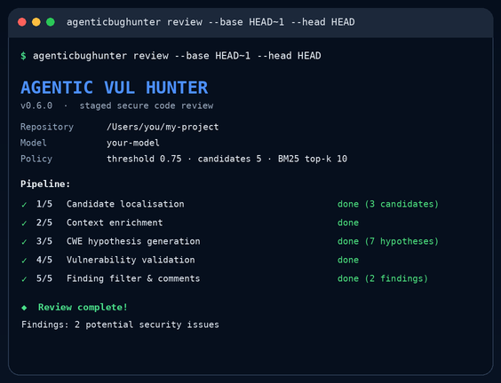

⌁
Diff-focused
Starts from changed lines instead of asking the model to blindly scan the whole repository.
AgenticVulHunter starts from the diff, gathers repository evidence, retrieves CWE knowledge locally, and validates findings before it writes a review comment.
The tool does a stage code security review to detect vulnerability in the changed line and the codebase.
Starts from changed lines instead of asking the model to blindly scan the whole repository.
Reads bounded context and resolves relevant code so a finding can be judged against real evidence.
Uses bundled CWE knowledge with BM25 retrieval. No separate retrieval or SAST server is required.
The stages work through a text interface, not vendor-specific function calling. Bring a supported model endpoint.
Model reasoning is used where interpretation helps. Python keeps locations, limits, scores, and final filtering under application control.
Select suspicious changed lines from the Git diff.
Gather bounded repository context and relevant symbols.
Retrieve local security knowledge and form candidate hypotheses.
Judge each candidate–CWE pair against evidence-based criteria.
Apply the threshold and emit supported review comments.
Run agenticbughunter init --no-hook, then configure the model in .agenticbughunter.toml. Environment variables are available when you need overrides for CI or secrets.
[llm]
provider = "openai"
base_url = "http://localhost:11435/v1"
model = "qwen3-coder:30b"
api_key = "ollama"
[pipeline]
confidence_threshold = 0.75
max_candidates = 5pipx install "git+https://github.com/awsm-research/AgenticBugHunter.git"agenticbughunter init --no-hookagenticbughunter doctor --check-llmagenticbughunter review --base HEAD~1 --head HEAD--no-hook keeps your normal git push workflow unchanged.Each run writes artifacts under .agenticbughunter/runs/<run-id>/, including configuration, prompt hashes, model text, retrieval results, judgments, and final comments.

The application and benchmark harness are related implementations, not interchangeable experiments. The repository documents what is preserved, what changed for real-world use, and what has actually been validated.